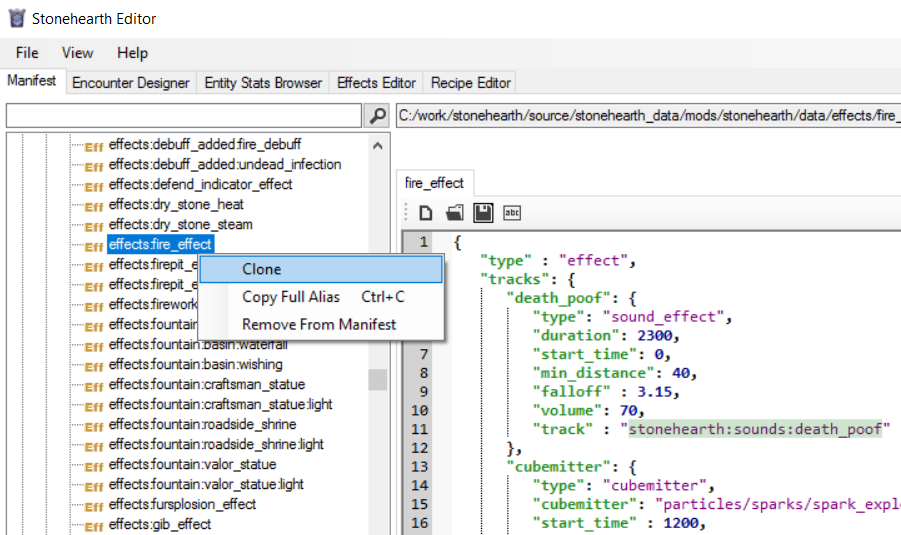

Effects in Stonehearth refer to any visual effect, like animations, particle effects, lights, etc. and also to sound effects. For color maps and material maps (which use shaders) see this page.
For programmers, the effects code is in radiant/modules/effects.lua, and the different types of effects we can have are inlined in radiant/modules/effects/effect_tracks.lua, but the actual implementation of the effects is mostly in C++.
In the stonehearth mod, we can find most of the effects that the game uses inside stonehearth/data/effects. For animation effects, they're stored in some of the subdirectories of stonehearth/data/rigs.
 Here's a handy conversor for colors, since for effects they're specified as a range from 0 to 1, so you'll have to convert their hex/RGB value to decimal (the rest of the game uses hexadecimal values most of the times): http://www.corecoding.com/utilities/rgb-or-hex-to-float.php
Here's a handy conversor for colors, since for effects they're specified as a range from 0 to 1, so you'll have to convert their hex/RGB value to decimal (the rest of the game uses hexadecimal values most of the times): http://www.corecoding.com/utilities/rgb-or-hex-to-float.php
- The effect file
- Types of values for particle and light effects
- How to attach a default effect to an entity
- Testing effects
- Using SHED
The effect file
This file will determine the position and effect tracks.
Let's take a look at stonehearth/data/poof_effect/poof_effect.json:
{
"type" : "effect",
"tracks": {
"dust": {
"type": "cubemitter",
"cubemitter": "particles/dust_poof/purple_dust_poof.cubemitter.json",
"loop": false,
"start_time" : 0,
"end_time" : 2000,
"transforms": {
"x":0,
"y":0,
"z":0,
"rx":90,
"ry":0,
"rz":0
}
},
"sound": {
"type": "sound_effect",
"start_time": 150,
"min_distance": 27,
"falloff" : 5,
"volume": 60,
"track" : "stonehearth:sounds:death_poof"
}
}
}
The effect files are JSON files composed by two keys:
- "type" : "effect" : we tell the game that this is a VFX.
- "mixins" -- optional field pointing to a mixin or an array of mixins, if you want to reuse some info between effect files.
- "tracks" : {...} : here we declare all the tracks that the VFX will have. They can be of different type. You can name each track however you want (keep the names unique for clarity). Inside each track, we declare the type of the track and the parameters for the track. In this example we have a particle effect and a sound effect. Both will be played at the same time (depending on their start_time) whenever the game runs this effect.
 Be careful when setting loop for effect tracks. If you play an animation in an AI action and it has loop set to true, the AI action might not be able to finish and will be stuck repeating the effect indefinitely.
Be careful when setting loop for effect tracks. If you play an animation in an AI action and it has loop set to true, the AI action might not be able to finish and will be stuck repeating the effect indefinitely.
There are different types of effect tracks, discussed in this guide. The most common ones are "cubemitter", "animation_effect", "sound_effect" and "light".
Types of values for particle and light effects
For each field in the cubemitter or animatedlight files we can choose between different types of values. So we'll put an example here for each value type and their constraints, to use as reference in the other sections of the guide.
| Type | Example value | Notes |
|---|---|---|
| "kind" : "CONSTANT" | "values" : [3] | A single value inside the array. |
| "kind" : "RANDOM_BETWEEN" | "values" : [0, 0.1] | Here we can only specify 2 values in the array. The first one must be lower than the second one. |
| "kind" : "CURVE" | "values": [ [0, 0.8], [0.5, 0.6], [1, 0.6] ] | For this type we must specify at least 2 points. The first value of the point represents the moment (time) during the effect at which the values will be applied, from 0 to 1 (so usually the first point is [0, N] and the last point is [1, M]). |
| "kind" : "RANDOM_BETWEEN_CURVES" | "values": [ [ [0, 0.4], [0.5, 0.2], [1, 0.6] ], [ [0, 0.8], [0.3, 0.6], [1, 0.7] ] ] | Inside of the array we must have 2 arrays, each containing a curve (defined like the values for the "CURVE" type). They don't need to have the same amount of points. |
| "kind" : "BURST" | "values": [ [ 250, 1, 1 ] ] | An array of curves. It will spawn the specified amount of particles all at once. First value is time in real time seconds. Second value is minimum number of particles, and third value is maximum number of particles (a random number of particles between the minimum and maximum will spawn). We can specify more than one curve for the values here, to burst particles at the specified times, creating like a delay between them. |
| "surface" : "POINT" | (No "values" field needed for POINT surface, will use the position defined in the effect file). | |
| "surface" : "RECTANGLE" | "values" : [1, 1, 0, 0] | The values in the array represent width, length, inner width, inner length, in that order. Inner width/length higher than 0 will make it so that instead of emitting particles anywhere from a solid rectangle, they're only emitted along the edges of the rectangle, i.e. between the width/length and inner width/length shape. |
| "surface" : "CUBOID" | "values" : [1, 1, 1, 0, 0, 0] | The values in the array represent width, length, depth, inner width, inner length, inner depth. In the same way than for RECTANGLE, inner values higher than 0 will make it so that particles spawn in the area between the outer edges and the inner edges of the cube. You can write it as "CUBE" instead of "CUBOID" if that's easier to remember. |
| "surface" : "SPHERE" | "values" : [1, 0, 360] | The values in the array represent the radius, the inner radius, and the angle, in that order. Inner radius has the same meaning than for the rest of surfaces. The angle (in degrees) will make it so that instead of a full sphere, the particles only spawn in a shape of half a sphere (180), in a quarter of a sphere (90), etc. Useful to create arcs like rainbows and the like. |
| "surface" : "CYLINDER" | "values" : [1, 2, 0, 360] | The values in the array represent height, radius, inner radius and angle. Similar meaning than for the SPHERE surface. |
| "surface" : "CONE" | "values" : [1, 0, 45, 0] | The values in the array represent radius, inner radius, angle, inner angle, in that order. This surface will emit the particles from a cone shape (pointing downwards by default). The inner angle will make it so that the flat area does not emit particles (the same happens when you use inner radius for the CYLINDER surface). The higher the angle value, the more flat/short/rounded the cone will be (less defined shape), so try using a big radius with a sharp angle to see the shape. |
How to attach a default effect to an entity
If you want a particular entity to run an effect permanently, add this to the "components" section in the entity's JSON file (example from stonehearth/jobs/geomancer/geomancer_golem_workbench/geomancer_golem_workbench_ghost.json):
"effect_list": {
"default": "file(/data/rigs/jobs/geomancer/golem_workbench/effects/idle.json)"
}
If that doesn't work, use this syntax instead:
"effect_list": {
"effects": [
"stonehearth:effects:corruption:beetle"
]
}
Some entities, like the lanterns, use the lamp component to specify an effect that will be run either permanently or only at night.
To run effects from Lua we'll do:
radiant.effects.run_effect(self._entity, 'stonehearth:effects:undeploy_overlay_effect', optional_parameters)
Testing effects
To test an effect quickly, we can select an entity in the game, open the default console, type spawn_effect uri_of_the_effect and press Enter.
If the effect has an alias we can use it (preceded by the namespace of the mod). For animated entities, we can simply use the name of the effect that has the animation (e.g.: sleep). Mind that some effects might not run as expected when testing this way.
You can also set up a test world to test your effects. There are some examples in the stonehearth_tests mod that you can reuse.
Using SHED
To create an effect with SHED, clone an existing effect file from the Manifest view, and edit its fields to point to your mod:

For creating the referenced files, you'll use the Effect Editor tab. See the other pages of this guide for reference.